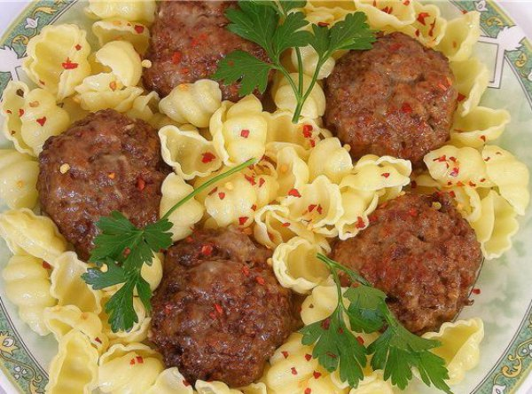

|

|
Ингредиенты
- Говяжий и свиной фарш — 1кг,
- Репчатый лук — 3 средние головки,
- Зубчики чеснока — 6-8 шт.,
- Куриное яйцо — 1шт.,
- Свежее молоко — 150 мл,
- Батон —4-6 ломтика,
- Соль — 2 ч. ложки,
- Черный перец — щепотка,
- Макароны — 400 Грамм,
- Помидоры — 2 шт.,
- Сладкий перец — 1 шт.,
- Масло для обжарки котлет – 100 мл;
|
Порядок приготовления
- В глубокую кастрюлю налейте воду, добавьте 2 чайные ложки соли и доведите на большом огне до кипения.
- Всыпьте необходимое количество макарон и незамедлительно размешайте, чтобы макароны не слиплись.
- Помешивая, доведите воду вновь до кипения, а затем убавьте огонь до среднего и продолжайте варку ещё 5-8 минут, в зависимости от качества макарон.
- Отдельно, в глубоком сотейнике потушите мелко нарезанные помидоры со сладким перцем, переложите к ним отваренные макароны, перемешайте и готовьте ещё 5-10 минут на умеренно среднем огне, пока макароны не впитают в себя влагу.
- Далее будем готовить котлеты, но перед тем замочите хлеб в молоке.
- В мясной фарш добавьте лук и чеснок пропущенные через мясорубку, вбейте одно яйцо и перемешайте.
- Выложите размякший хлеб со всем содержимым и снова перемешайте, только основательно.
- Из приготовленного мясного фарша сформируйте плоские котлеты и обжарьте их на сковороде в раскалённом масле с обеих сторон, до золотистой корочки.
- Для подачи, разливаем сначала гарнир из макарон и накладываем мясные котлеты в любом желаемом количестве.
|